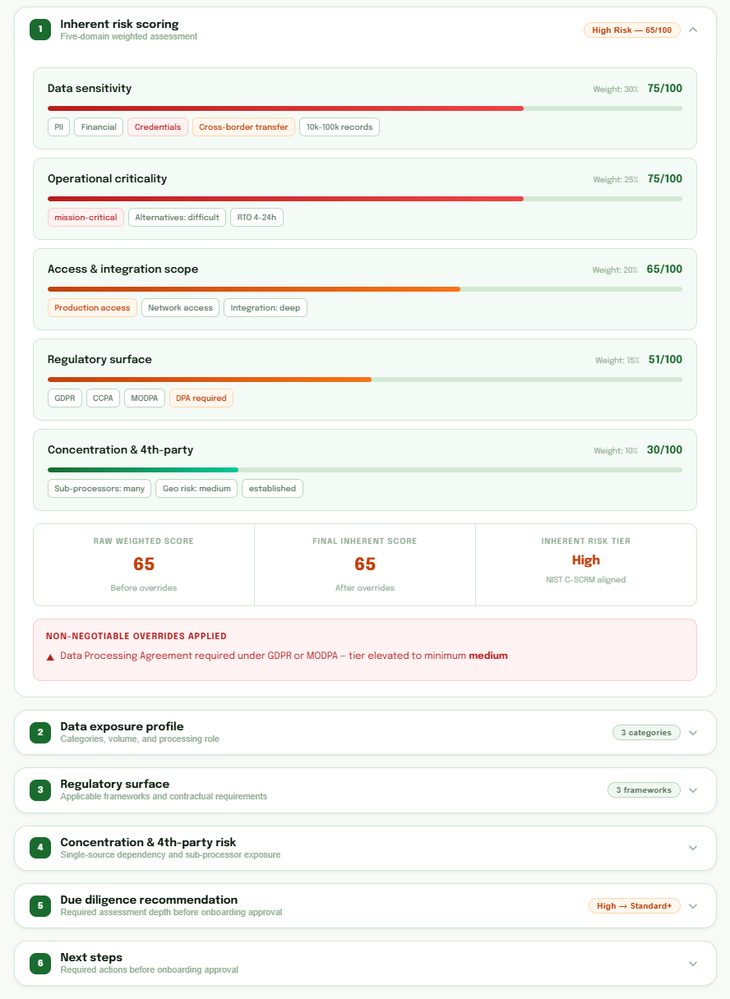
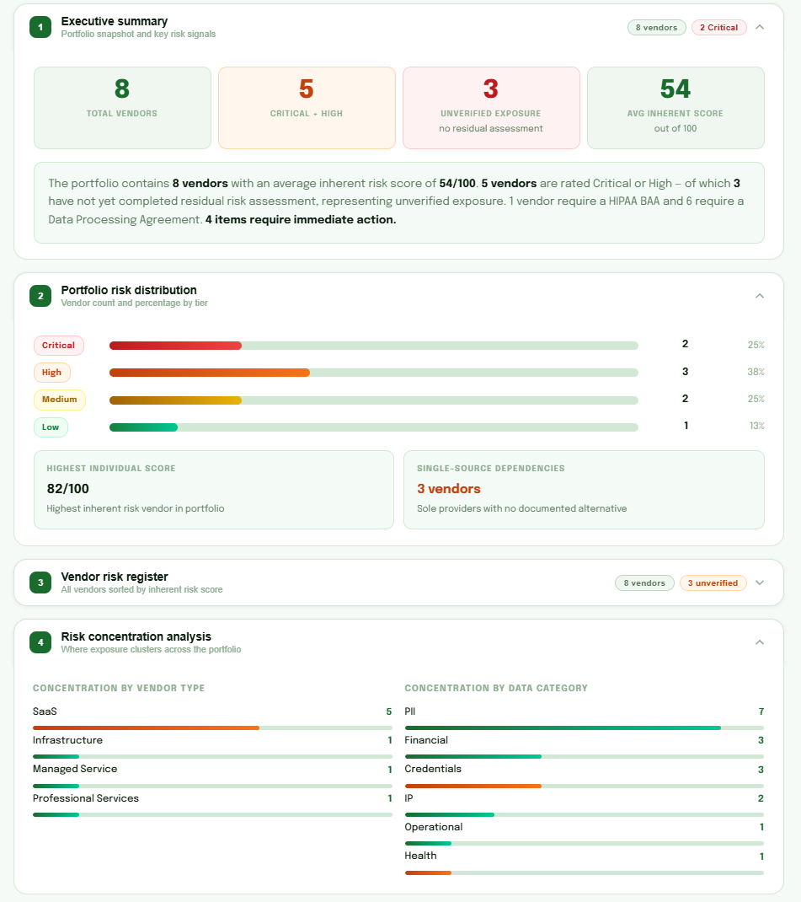
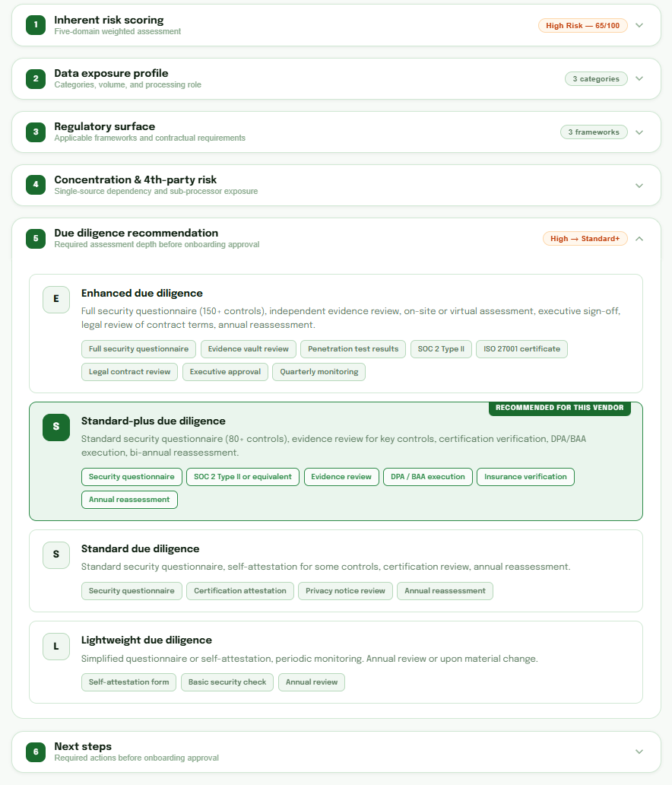

Find the vendors most likely to disrupt your business
Start with immediate visibility into vendor exposure, dependency concentration, and priority actions. NIST SP 800-161 aligned and built for defensible decisions.
No account required · Fast browser-based triage · Upgrade path to deeper assessment and evidence
What you get fast
A quick read on vendor exposure so security and procurement can agree what to review first—not a full diligence program.
Exposure snapshot
Which vendors need attention first.
Priority order
Who to dig into before you spread effort across the list.
Risk signals
Concentration, critical dependencies, and evidence gaps.
Stakeholder-ready output
Clear enough for leadership and audit—not slide-deck opinions.
Sample portfolio report Vendor Exposure Brief pricing Reports overview
Built for defensible vendor risk decisions
A delivery model designed for practical review, evidence traceability, and low-friction deployment.
Runs where you need it
Browser-first, local build, or API-backed — one stack, configuration-gated delivery. Your environment drives the topology.
Data under your control
Client-side execution and optional air-gapped builds. Processing and storage stay inside your boundary.
Audit-ready by design
Single data model and audit trail from ingestion to approval. NIST SP 800-161–informed schema for structurally defensible outputs.
Surface risk before it becomes a breach.
When vendor risk stays hidden or overlooked, it compounds—leadership lacks clear answers and failure modes go unaddressed. VendorSoluce™ surfaces that risk: get a clear view of exposure, prioritized next steps, and evidence-backed approvals, NIST SP 800-161 aligned.
Reviews vs. defensible decisions
Vendors are "reviewed," but approvals can't be justified under audit or executive scrutiny.
How we help: NIST-aligned assessments and Evidence Vault — link controls to proof so decisions are defensible.
Documents vs. accountable evidence
Documents exist, but they aren't connected to decisions, owners, and explicit risk acceptance.
How we help: Evidence Vault and remediation tracker — connect evidence to decisions and risk acceptance.
Signals vs. actions
Signals appear, but they don't trigger reassessment. Drift becomes surprise.
How we help: Vendor Threat Radar and continuous monitoring — so drift triggers reassessment.
Three steps to vendor risk readiness.
From risk visibility through assessment to evidence-backed decisions — a structured workflow that keeps pace with vendor and supply chain risk.
Map vendor inherent risk
Import vendors in bulk or add them one at a time. The Radar heatmap surfaces inherent risk, sector, and geography so priorities stay visible at a glance.

Assess supply chain readiness
Run NIST SP 800-161–aligned assessments across vendors and the wider supply chain. You get gap analysis and a clear, prioritized path for the next practical steps.

Evidence-backed due diligence
In the VendorSoluce™ Portal, close the loop on Radar findings: vendor assurance, evidence, remediation, and approvals. Decisions stay audit-ready and defensible.

Try free now, or get a version for your team
Use it in your browser with no sign-up, install it on your own systems, or run a shared version for your organization.
Use it in your browser
See which vendors and supply chains carry more risk — no account or setup. Your data stays in your browser.
- No sign-up required
- Data stays in your browser
- Start in minutes
Install on your own systems
Run a version on your computers or network. Works offline; your data never has to leave your control.
- Works offline
- Your data stays local
- Available after a short setup
A shared version for your organization
Your whole team can assess vendors, store evidence, and keep records for audits — all in one place.
- For your whole organization
- Secure storage for evidence & audits
- Built for teams